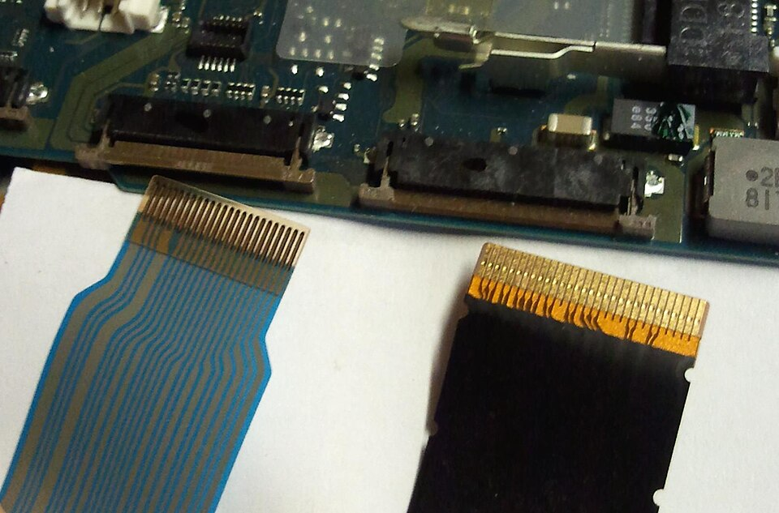
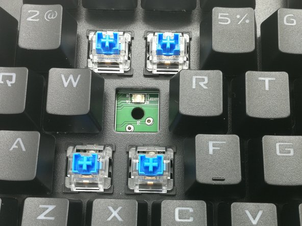

Diagnose and repair iClever and other keyboards
Separate Bluetooth, USB and receiver faults from bad switches, damaged ribbons, matrix rows and mechanical sticking.
First separate the host, link and key mechanism
Read the exact model on the underside. An iClever BK08 or BK10 is a Bluetooth keyboard, while a DK05 combo uses its matched receiver. Some charging sockets on wireless keyboards supply power only. Use the manual’s diagram to verify indicators, channel, pairing command and cable role. Model revisions can change controls, so use the diagram on the matching manual.
- On the iClever practice unit, charge with a compatible cable, confirm the power indication and pick an available documented Bluetooth slot. Follow that revision’s pairing command and verify the pairing light before selecting it on the host. Check that another previously paired device has not taken the slot.
- Test on a second host you own and test another known-good Bluetooth input device on the first host. For a receiver model use its correct receiver directly in a known-good USB port and test on a second machine. For a wired model test another port, inspect the cable and test with no hub.
- Use an offline text editor and a list of characters, modifiers and known key combinations. Record isolated missed keys, double entries, stuck keys and entire groups. A changed layout or OS mode can explain altered symbols while a whole physical row suggests a matrix path. Actual matrix groupings can cross visual rows.

Photo by Zeroping, scaled for the course. Original photo · CC0.


Photo by Matt Chan and iFixit contributors, with added labels. Original guide · CC BY-NC-SA 3.0.
iClever demonstrates how to troubleshoot Bluetooth slots on the IC-BK08.
Repair the physical failure at the right level
Disconnect USB and isolate accessible power or remove batteries before opening. For a portable iClever with a damaged hinge, scissor or sealed battery, compare part availability and manual disassembly before pulling keycaps. A fold-dependent set of missing keys makes the hinge flex or connector worth inspecting with power off. Check a detachable flex for visible damage and seat it according to the latch type. Leave a swollen or damaged rechargeable cell isolated for proper handling.
On your documented mechanical trainer, compare an identical good switch and the suspect switch. A hot-swap board uses a puller on a supported switch after removing the cap. A soldered board, such as the pictured procedure, requires controlled rework and protection of adjoining pads. Read the exact revision because either construction can exist under similar model names. With the part isolated, use a meter across the specified switch contacts. Compare idle, pressed and repeatability. Replace a matched bad switch and retest the whole matrix. A membrane keyboard’s repeat row failure may need the membrane or flex replaced.